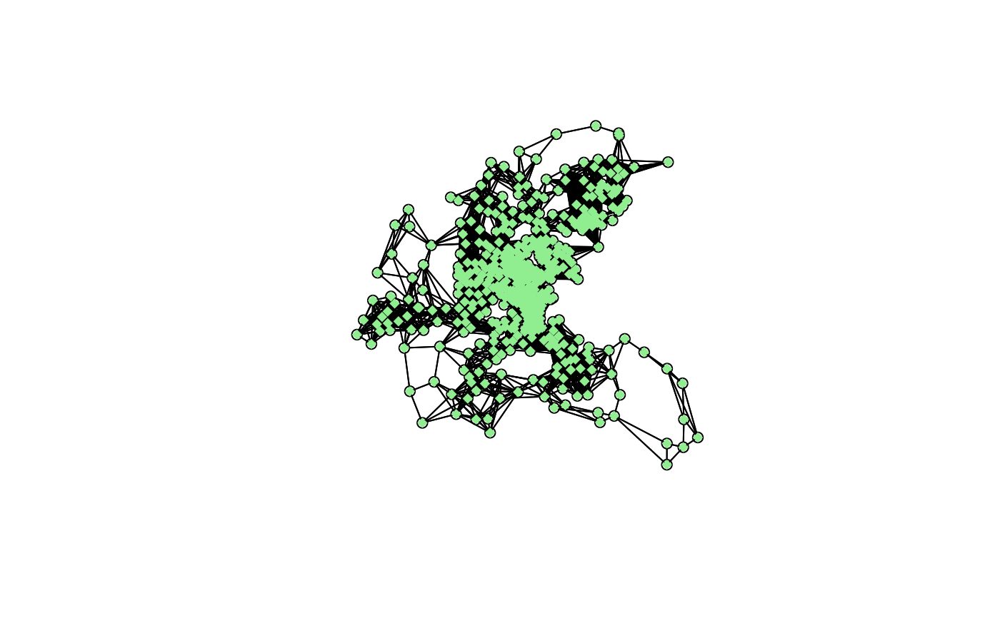

Block up neighbour list for location-less observations
nb2blocknb.RdThe function blocks up a neighbour list for known spatial locations to create a new neighbour list for multiple location-less observations know to belong to the spatial locations, using the identification tags of the locations as the key.
Arguments
- nb
an object of class
nbwith a list of integer vectors containing neighbour region number ids; if null, an nb object with no neighbours is created the length ofunique(as.character(ID))- ID
identification tags of the locations for the location-less observations;
sort(unique(as.character(ID)))must be identical tosort(as.character(attr(nb, "region.id")));same length as
row.namesif provided.- row.names
character vector of observation ids to be added to the neighbours list as attribute
region.id, defaultseq(1, nrow(x)); same length asIDif provided.
Details
Assume that there is a list of unique locations, then a neighbour list can build for that, to create an input neighbour list. This needs to be "unfolded", so that observations belonging to each unique location are observation neighbours, and observations belonging to the location neighbours of the unique location in question are also observation neighbours, finally removing the observation itself (because it should not be its own neighbour). This scenario also arises when say only post codes are available, and some post codes contain multiple observations, where all that is known is that they belong to a specific post code, not where they are located within it (given that the post code locations are known).
Value
The function returns an object of class nb with a list of integer vectors containing neighbour observation number ids.
Author
Roger Bivand Roger.Bivand@nhh.no
Examples
# \dontrun{
data(boston, package="spData")
summary(as.vector(table(boston.c$TOWN)))
#> Min. 1st Qu. Median Mean 3rd Qu. Max.
#> 1.0 2.0 4.0 5.5 7.0 30.0
townaggr <- aggregate(boston.utm, list(town=boston.c$TOWN), mean)
block.rel <- graph2nb(relativeneigh(as.matrix(townaggr[,2:3])),
as.character(townaggr[,1]), sym=TRUE)
block.rel
#> Neighbour list object:
#> Number of regions: 92
#> Number of nonzero links: 240
#> Percentage nonzero weights: 2.835539
#> Average number of links: 2.608696
print(is.symmetric.nb(block.rel))
#> [1] TRUE
plot(block.rel, as.matrix(townaggr[,2:3]))
points(boston.utm, pch=18, col="lightgreen")
block.nb <- nb2blocknb(block.rel, as.character(boston.c$TOWN))
block.nb
#> Neighbour list object:
#> Number of regions: 506
#> Number of nonzero links: 15234
#> Percentage nonzero weights: 5.949945
#> Average number of links: 30.10672
print(is.symmetric.nb(block.nb))
#> [1] TRUE
plot(block.nb, boston.utm)
points(boston.utm, pch=18, col="lightgreen")

n.comp.nb(block.nb)$nc
#> [1] 1
moran.test(boston.c$CMEDV, nb2listw(boston.soi))
#>
#> Moran I test under randomisation
#>
#> data: boston.c$CMEDV
#> weights: nb2listw(boston.soi)
#>
#> Moran I statistic standard deviate = 21.786, p-value < 2.2e-16
#> alternative hypothesis: greater
#> sample estimates:
#> Moran I statistic Expectation Variance
#> 0.690285059 -0.001980198 0.001009685
#>
moran.test(boston.c$CMEDV, nb2listw(block.nb))
#>
#> Moran I test under randomisation
#>
#> data: boston.c$CMEDV
#> weights: nb2listw(block.nb)
#>
#> Moran I statistic standard deviate = 22.455, p-value < 2.2e-16
#> alternative hypothesis: greater
#> sample estimates:
#> Moran I statistic Expectation Variance
#> 0.3122905961 -0.0019801980 0.0001958827
#>
block.nb <- nb2blocknb(NULL, as.character(boston.c$TOWN))
#> Warning: neighbour object has 92 sub-graphs
block.nb
#> Neighbour list object:
#> Number of regions: 506
#> Number of nonzero links: 4868
#> Percentage nonzero weights: 1.901295
#> Average number of links: 9.620553
#> 17 regions with no links:
#> 1, 55, 56, 57, 58, 65, 196, 257, 284, 285, 286, 287, 342, 343, 348,
#> 349, 354
#> 92 disjoint connected subgraphs
print(is.symmetric.nb(block.nb))
#> [1] TRUE
plot(block.nb, boston.utm)
 n.comp.nb(block.nb)$nc
#> [1] 92
moran.test(boston.c$CMEDV, nb2listw(block.nb, zero.policy=TRUE), zero.policy=TRUE)
#>
#> Moran I test under randomisation
#>
#> data: boston.c$CMEDV
#> weights: nb2listw(block.nb, zero.policy = TRUE)
#> n reduced by no-neighbour observations
#>
#> Moran I statistic standard deviate = 21.145, p-value < 2.2e-16
#> alternative hypothesis: greater
#> sample estimates:
#> Moran I statistic Expectation Variance
#> 0.6188830566 -0.0020491803 0.0008623116
#>
# }
n.comp.nb(block.nb)$nc
#> [1] 92
moran.test(boston.c$CMEDV, nb2listw(block.nb, zero.policy=TRUE), zero.policy=TRUE)
#>
#> Moran I test under randomisation
#>
#> data: boston.c$CMEDV
#> weights: nb2listw(block.nb, zero.policy = TRUE)
#> n reduced by no-neighbour observations
#>
#> Moran I statistic standard deviate = 21.145, p-value < 2.2e-16
#> alternative hypothesis: greater
#> sample estimates:
#> Moran I statistic Expectation Variance
#> 0.6188830566 -0.0020491803 0.0008623116
#>
# }